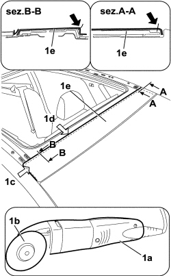
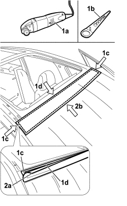
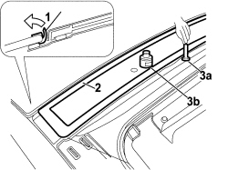
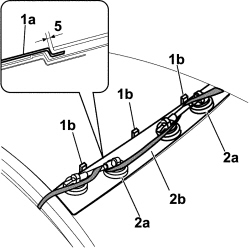

7030B93 FRONT SLIDING ROOF - R R
- Path
- Procedures > 70 FITTINGS > 7030 SUN ROOF/GLASS PANEL > 7030B SLIDING ROOF > 7030B93 FRONT SLIDING ROOF - R R
- Kind
- repair procedure (removal / refitting; the operation number is the code)
- Applies to
- all engines; all production periods
- Interactive page
- https://sloeber94.github.io/elrnDB-fCrm/en/#/194000995
Applies to: all engines; all production periods
 Removing
Removing
 Refitting
Refitting- Turn the ignition key to the OFF position.
- Disconnect the negative battery terminal.
Description | Connector | |
|---|---|---|
BATTERY |
(both)
Op. 7030B41 SLIDING ROOF ASSEMBLY OUTER MOULDING (ONE) - R R
Op. 7030B42 SLIDING ROOF SPOILER - R+R
Op. 7030B49 SLIDING ROOF FRONT ANTI-WIND NOISE GASKET - R R
1. Use a Fein vibrating cutter (1a) and Fein 63502103010 cutting blade (1b) to cut the roof panel at points (1c), (1d) and (1e).

Applies to: all engines; all production periods
1. Use a Fein vibrating cutter (1a) and Fein 194 cutting blade (1b) to cut the sealant at the side (1c) and rear (1d).
2. Raise the panel (2a) and, still working from the rear, cut the sealant (2b) and remove the roof.

Applies to: all engines; all production periods
Refitting
Removing1. Use adhesive tape to fold the lip of the windscreen seal to free the working area.
2. Use an appropriate tool, taking care not to damage the windscreen seal lip, cut and level the sealant strip to leave a thickness between 0.25 and 1 mm in the roof housing compartment on the body.
Thoroughly clean the roof housing compartment on the body with compressed air and degrease thoroughly with heptane
Component | Type | Description | Classification | Qty. | Validity |
|---|---|---|---|---|---|
Sliding roof fixed transparent housing | - | Activator for PUR | - | - |
Apply the glass adhesion promoter (primer) (3b) to the site of the old sealant strip using the wick (3a) supplied in the Kit.

Applies to: all engines; all production periods
- Clean the new roof using heptane.
- Use a pneumatic gun to extrude a sealant strip to the site of the old strip in the roof housing compartment.
Component | Type | Description | Classification | Qty. | Validity |
|---|---|---|---|---|---|
Sliding Roof Fixed Glass | Sealant | Product n° 71711976 | - | - |
1. Position the roof (1a) and settle in position, inserting 5.1 mm spacers (1b) between the rear lens and the roof.
2. With the aid of suckers (2a) and belts (2b), exercise uniform pressure over the entire roof.

Applies to: all engines; all production periods
- Remove adhesive tape from the windscreen sealing lip.
Op. 7030B49 SLIDING ROOF FRONT ANTI-WIND NOISE GASKET - R R
Op. 7030B42 SLIDING ROOF SPOILER - R+R
(both)
Op. 7030B41 SLIDING ROOF ASSEMBLY OUTER MOULDING (ONE) - R R
- Connect the negative battery terminal.
Description | Connector | |
|---|---|---|
BATTERY |
Topics linked from this page (4)
- 7030B41 SLIDING ROOF ASSEMBLY OUTER MOULDING (ONE) - R R
- 7030B42 SLIDING ROOF SPOILER - R+R
- 7030B49 SLIDING ROOF FRONT ANTI-WIND NOISE GASKET - R R
- A001 BATTERY